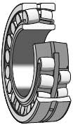
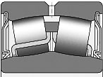

客服專線：(03)280-6015

球面滾子軸承有固有的自調心功能，而且很堅固，雙列滾子使該軸承能夠承受重載荷，並經過多年改進的球面滾子軸承尺寸範圍很廣，包括個別 ISO 尺寸系列，還包括特殊設計，如用於振動篩和相似應用的軸承。
球面滾子軸承有兩排滾子，在外圈上有一個共用球面滾道，還有兩個內圈滾道，同軸承軸相對傾斜成一個角度。這使該軸承具有吸引力的設計特點，在很多要求高的應用中無法被取代。這些軸承具有自調心功能，對軸相對於軸承座的不對中和軸的變形或歪曲不敏感。球面滾子軸承在設計上處於領先地位，除了能承受很高的徑向載荷以外，也能承受兩個方向上很高的軸向載荷。
產品特性
開式軸承及密封式軸承
球面滾子軸承的標準供貨範圍包括開式軸承、密封軸承部分球面滾子軸承還以密封型軸承生產，在兩側帶接觸密封件，密封件有薄鋼板增強片。
用於振動應用的軸承
振動應用，例如振動篩或激震器，引起軸承中滾子和保持架的加速。這對軸承設計提出了額外要求。於振動應用的球面滾子軸承可承受比相應的標準軸承高得多的加速。容許加速取決於潤滑劑和加速種類 - 旋轉加速還是直線加速。
- 旋轉加速
軸承要承受旋轉外圈的載荷和旋轉加速場。這在保持架上產生來自無載荷滾子的週期性載荷。典型例子是振動篩和行星齒輪。壓路機要承受混合的旋轉加速和直線加速。容許的旋轉加速特定值在產品表中提供，對油潤滑軸承有效。 這些數值是以米/秒² 表示的，例如，其中 28g 表示 28 × 9,81 = 275米/秒²。 - 直線加速
軸承要承受衝擊載荷及由此產生的直線加速。這引起無載荷滾子對保持架槽的敲擊。典型的直線加速發生在鐵道上的車輪滾過鐵道接縫時。軸承用於振動應用的一個類似例子是壓路機在相對堅硬的表面上的振動。容許的直線加速特定值在產品表中提供，對油潤滑軸承有效，這些數值是以米/秒²表示的，例如，其中 90g 表示 90 × 9.81 = 883米/秒²。 - 軸承設計
用於振動應用的球面滾子軸承同 223 系列軸承的尺寸和性能相同，但標準供應的徑向內部遊隙為 C4。這些軸承可帶圓柱孔或圓錐孔供貨。 為了方便有效的軸承潤滑，所有軸承都在外圈上提供一個環形槽和三個潤滑孔。